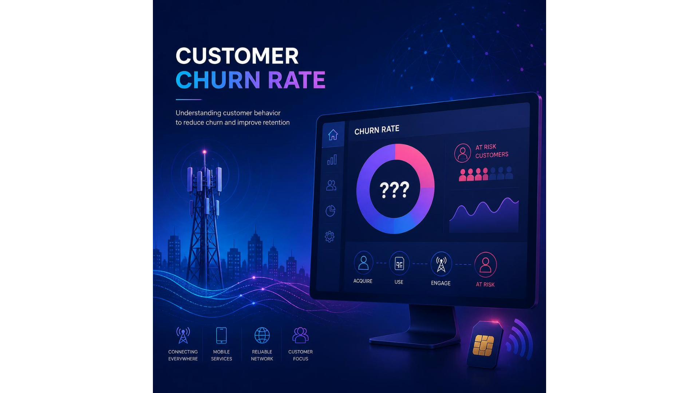
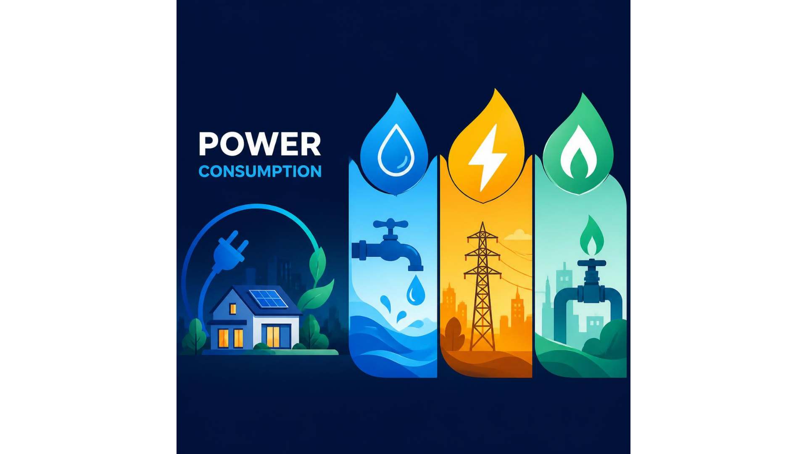
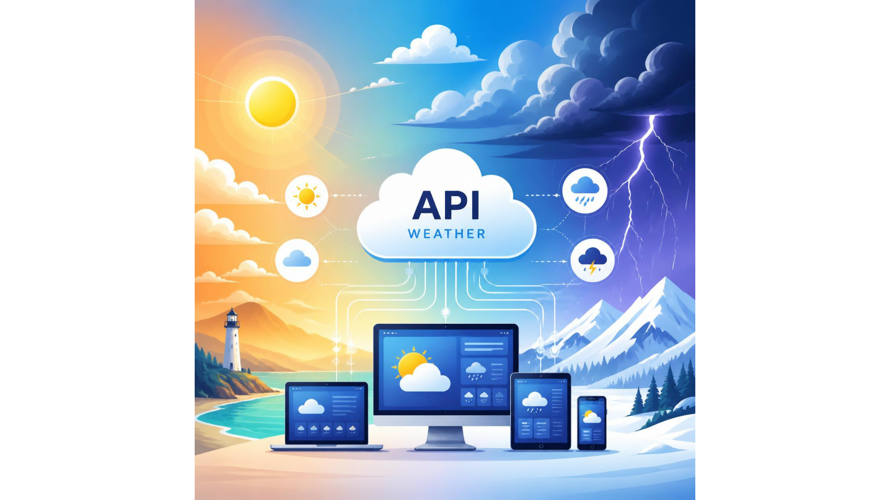
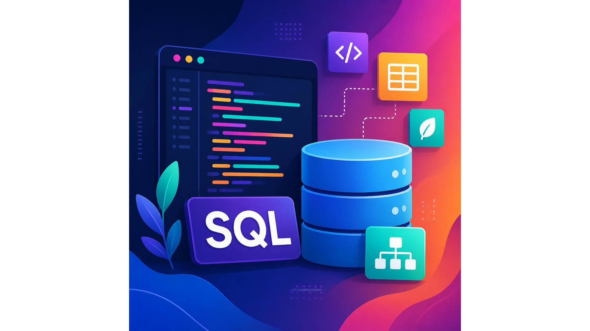

Clean Data
Reliable, structured and analysis-ready datasets.
Data Analyst focused on transforming raw data into clear insights, interactive dashboards, and measurable business outcomes.
About me
I’m Omar Wagdy, a Data Analyst with an accounting background and a focus on business intelligence.
I work across data preparation, exploratory analysis, KPI reporting and dashboard development. My goal is simple: make complex information easier to understand and easier to act on.
From sales performance to customer behavior, I combine analytical thinking with tools such as SQL, Power BI, Excel and Python to turn data into practical recommendations.
Reliable, structured and analysis-ready datasets.
KPI-focused reports built for decision makers.
Business questions translated into measurable actions.
Always improving tools, methods and business knowledge.
Toolkit
Interactive dashboards, DAX, data modeling and KPI storytelling.
Queries, joins, aggregations, CTEs and analytical reporting.
Advanced formulas, Pivot Tables, Power Query and reporting.
Pandas, NumPy, EDA and visualization workflows.
Exploratory dashboards, visual analytics and interactive storytelling.
Web-based reporting and marketing performance dashboards.
Understanding API concepts, requests, responses and data integration workflows.
Data cleaning, transformation and exploratory analysis in Python.
Preparing, transforming and structuring data for analysis and reporting.
Selected work
A focused portfolio across Excel, Power BI and SQL — with each project having its own case-study page and flexible image gallery.
Sales and furniture performance analysis built in Excel, focusing on products, revenue, trends and management-ready KPIs.
Open Case Study ↗
POWER BI↗Power BI dashboard focused on customer churn, retention signals, customer segments and the factors behind attrition.
Open Case Study ↗
POWER BI↗Power BI analysis for a service business, tracking operational performance, customers, revenue and core business KPIs.
Open Case Study ↗
POWER BI↗Power BI dashboard for energy consumption patterns, usage trends, cost analysis and actionable efficiency insights.
Open Case Study ↗
POWER BI↗Weather data collected through APIs and transformed into an analytics-ready Power BI experience with trends and comparisons.
Open Case Study ↗
SQL↗A visual library of SQL work, with code screenshots covering querying, joins, aggregations, CTEs, window functions and analytical logic.
Open Case Study ↗Experience
Analyzed datasets and developed dashboards and reports using Power BI, Excel and Python. Worked on ETL, EDA and KPI reporting around sales performance and customer behavior, with an understanding of APIs and data integration workflows.
Worked with digital marketing, UGC/influencers, SEO, media production, advertising and store creation services, strengthening the business and marketing perspective behind analytics.
Supported data and business-related tasks in a remote freelance environment.
Education & learning
Accounting Department — English Section
Alexandria University
Excel & Power BI modules with continued learning in Looker Studio and advanced Power BI projects.
Data AnalyticsHave a project or opportunity?
Tell me what you need help with. I’ll get back to you, and you can also reach me instantly on WhatsApp.
omarwagdy240@gmail.com ↗ Chat on WhatsApp ↗